Input tensor
RGB images are resized and cropped to 224 × 224, converted to a 3 × 224 × 224
tensor and normalized with ImageNet statistics.
A heatmap can look persuasive without being reliable. This report tests whether local saliency maps and concept-level explanations provide evidence that survives controlled checks.
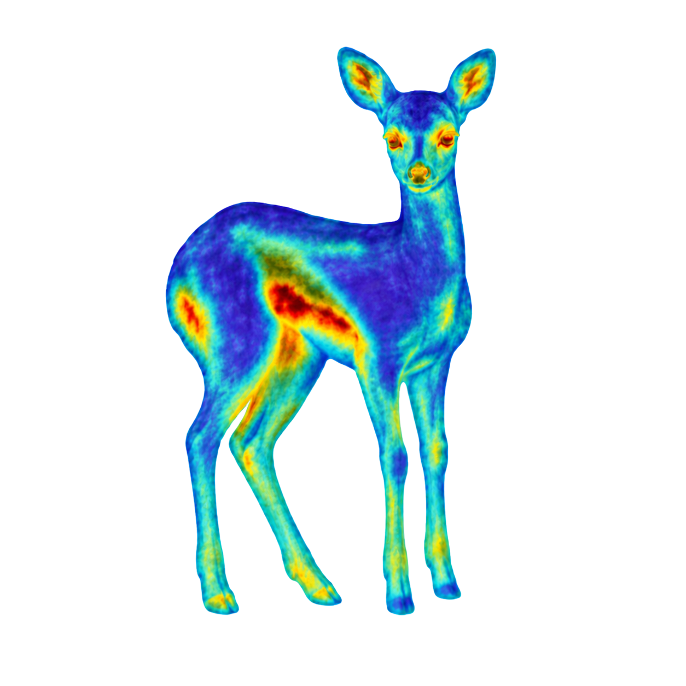
Deep Learning Project · University of Trieste · Alina Fogar, Emma Dariol, Elisabeth Imbalzano · 22/07/2026
Explainability connects a model output to interpretable evidence. Here, the output is an animal-class score; the evidence is either a region of the image or a human-readable concept.
We treat each explanation as a hypothesis rather than a proof. Visual plausibility is only the first step. Stability, faithfulness, class specificity and concept alignment provide stronger tests of whether the model is using the evidence shown to us.
An explanation becomes credible when independent checks agree. A single attractive heatmap is not enough.
The explained model is a standard ResNet50 adapted to the animal classes available in the AwA2 manifest.
We normally start from an ImageNet-pretrained ResNet50 and adapt it to the animal classes in our dataset. This transfer-learning setup preserves broadly useful visual features while specialising the model for our classification task. We can also rerun the training without ImageNet weights when we want a controlled comparison with an unpretrained initialization.
RGB images are resized and cropped to 224 × 224, converted to a 3 × 224 × 224
tensor and normalized with ImageNet statistics.
The canonical bottleneck architecture uses skip connections and progressive downsampling. The last
convolutional representation is approximately 2048 × 7 × 7.
CrossEntropyLoss compares class logits with the ground-truth label. AdamW updates trainable
parameters with weight decay.
Training uses stochastic augmentation. Validation and test images use deterministic resize and centre crop so reported performance is reproducible.
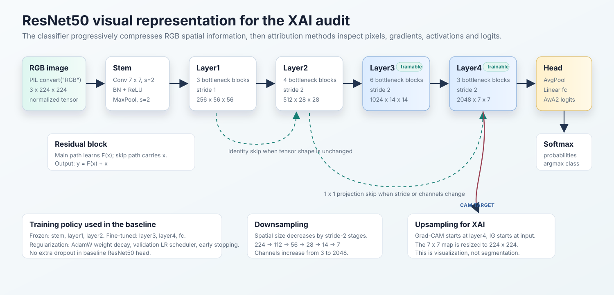
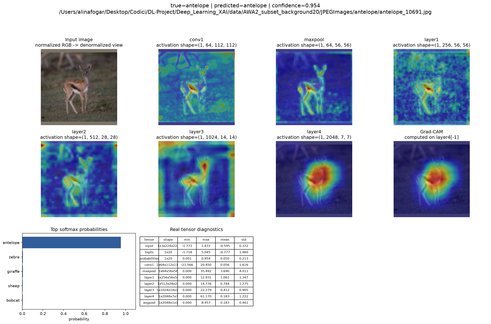
Grad-CAM and Integrated Gradients highlight the image regions that contribute to a chosen class prediction.
All maps follow the same output contract: a finite, non-negative, normalized spatial map. This makes visual and numerical comparisons possible without pretending that the methods are interchangeable.
Weights the last convolutional feature maps with target gradients. It is semantically expressive but inherits the coarse spatial resolution of the final feature layer.
Accumulates input gradients along a path from a blurred baseline to the image, approximating each pixel's contribution to the target score.
| Method | Works on | Main strength | Main limitation |
|---|---|---|---|
| Grad-CAM | Late feature maps | Class-discriminative regions | Coarse localization |
| Integrated Gradients | Input pixels | Path-based attribution | Baseline sensitivity |


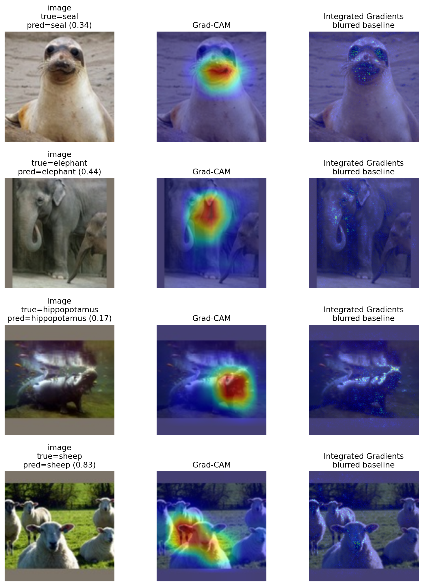
Misclassifications are useful because they force the explanation to account for a decision that is visibly incorrect.
An attribution for the predicted class asks which evidence increased the score the network actually chose. An attribution for the true class asks a different question: which regions would need to support the correct class more strongly?
Softmax normalizes logits; it does not verify the evidence. A wrong prediction can therefore remain highly confident.
Animal-centred saliency suggests visual similarity between classes. Background-heavy saliency suggests possible contextual shortcuts.
Confidence changes under perturbation are measured for the original saliency target, even when the predicted label changes.
Agreement between methods is useful but not conclusive. Independent perturbation and sanity checks remain necessary.
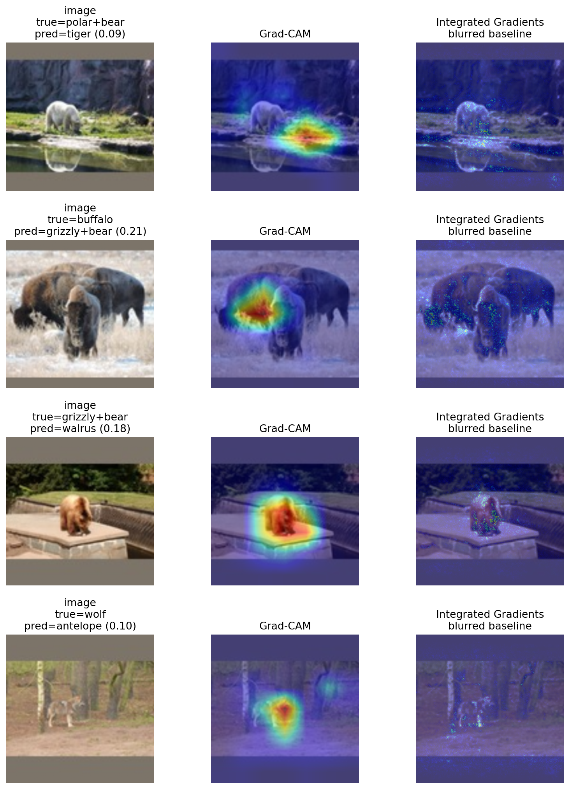
An error heatmap does not prove why the model failed. It proposes a hypothesis that must survive controlled tests.
The central intervention preserves the approximate animal region while changing its context.
If the fixed target probability or the saliency map changes substantially, the explanation is sensitive to background information that should have been secondary.
Add random noise only outside the approximate animal mask.
Shift background RGB channels while leaving the animal region intact.
Replace the approximate background with controlled random texture.
Track prediction transitions, fixed-target confidence and spatial similarity between saliency maps.
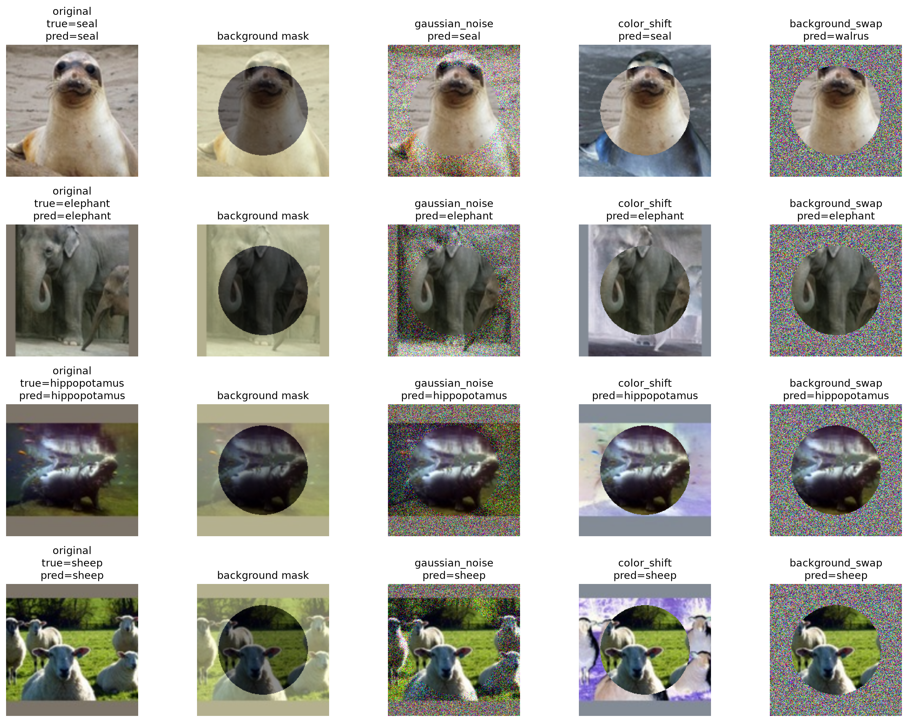


Concept methods complement spatial maps by asking whether the representation aligns with attributes that people can name.
The two approaches play different roles. TCAV probes an existing representation; the Concept Bottleneck Model makes concepts an explicit part of the prediction path.
Learns a concept direction from positive examples and negative references, then measures whether moving along that direction increases a target-class score. The updated protocol supports repeated CAV fits, class-disjoint validation and matched random-CAV controls when those outputs are generated.
Predicts AwA2 semantic attributes first and uses those predicted concepts for classification. The concept targets are class-level, so every image of one class receives the same concept vector: a useful bottleneck baseline, but not image-level concept annotation.


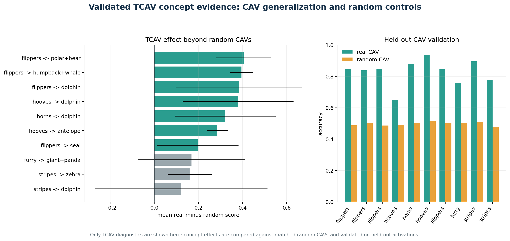
The updated pipeline can produce repeated, held-out CAV validation and random-control comparisons. The available figure was generated from a legacy exploratory CSV with training-fit accuracy only, so it does not claim held-out generalisation, statistical significance or an effect beyond random CAVs.
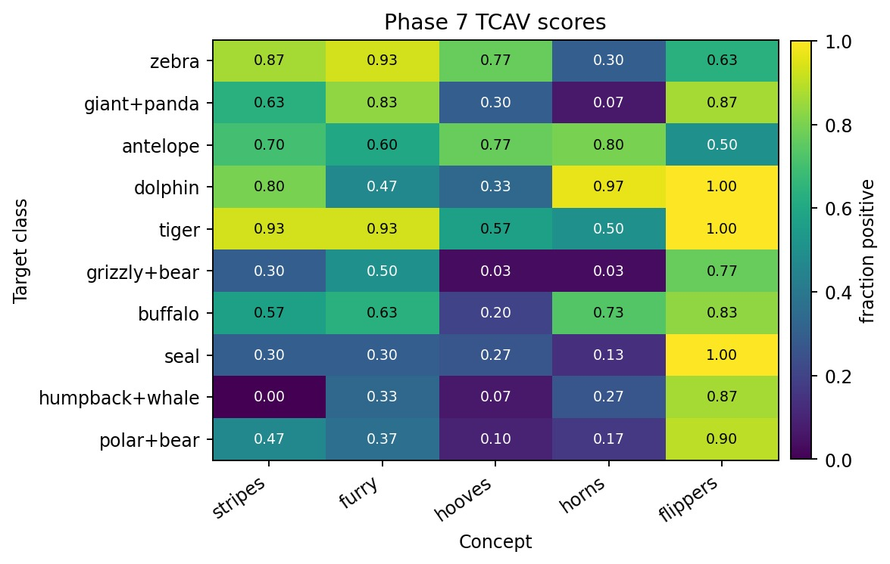
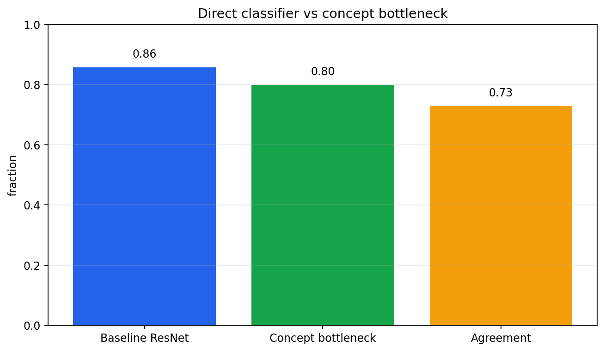
Metrics turn visual impressions into checks that can be reproduced across images and methods.
No single number establishes faithfulness. Spatial overlap, rank stability, score response, region allocation and sanity controls answer different questions.
Does the most salient spatial support remain in the same region? Higher overlap indicates more stable localization.
Does the full pixel-importance ordering remain similar? Constant maps are treated as undefined rather than as artificial agreement.
Do salient pixels actually affect the target score? A faithful map should delete evidence quickly and recover it early during insertion.
How much normalized saliency lies on the approximate animal region compared with the background?
Does the map agree with occlusion evidence and change when relevant model parameters are randomized?
TCAV needs held-out CAV validation and random controls; its fixed concept directions can then be audited under the same background interventions used for saliency maps.
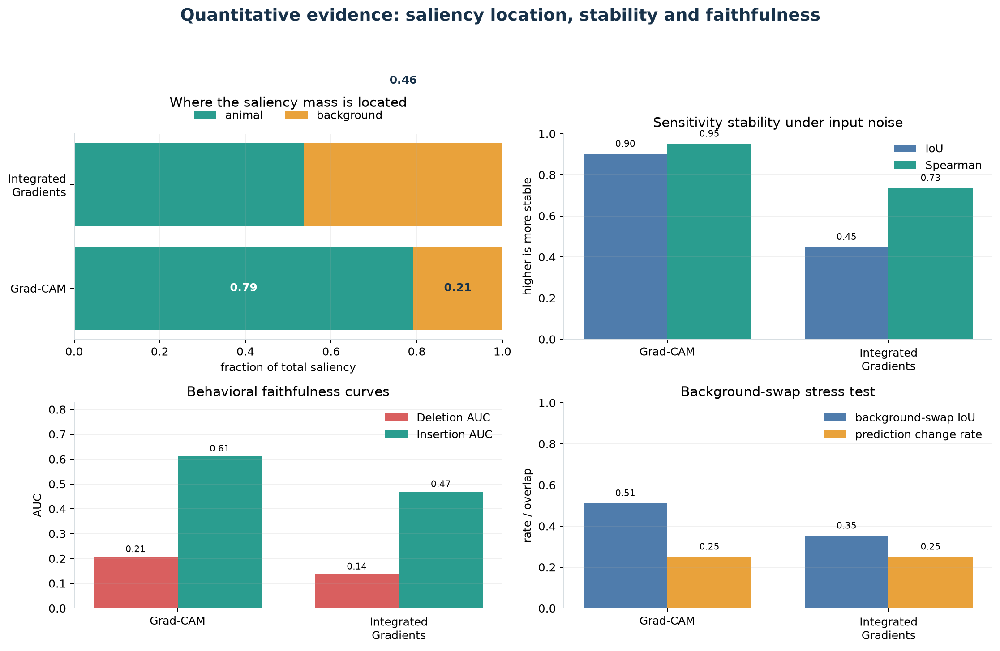
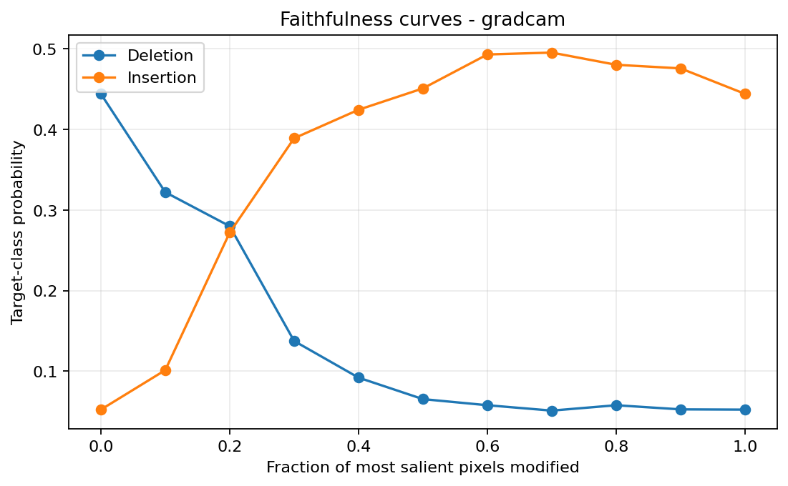
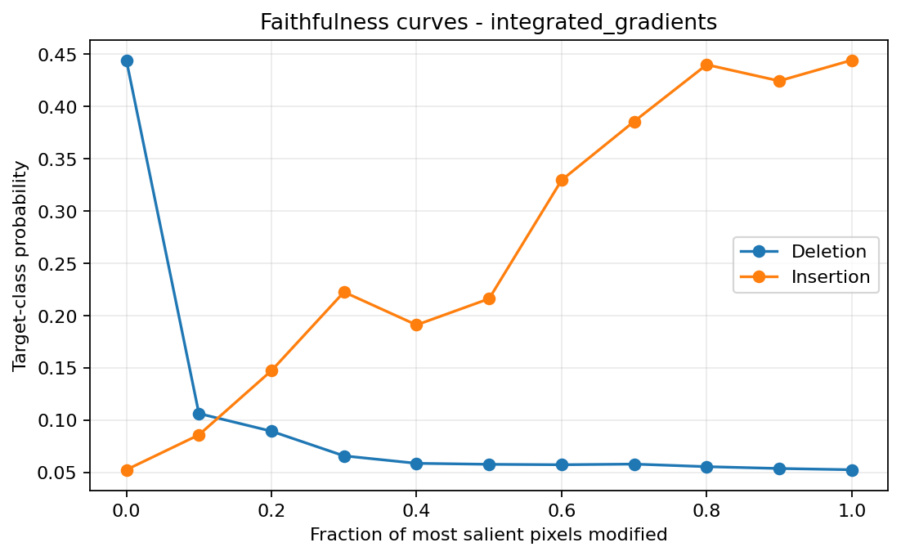

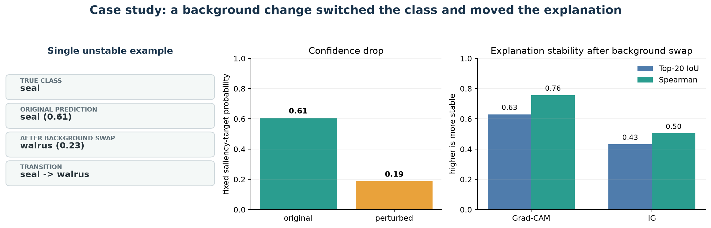
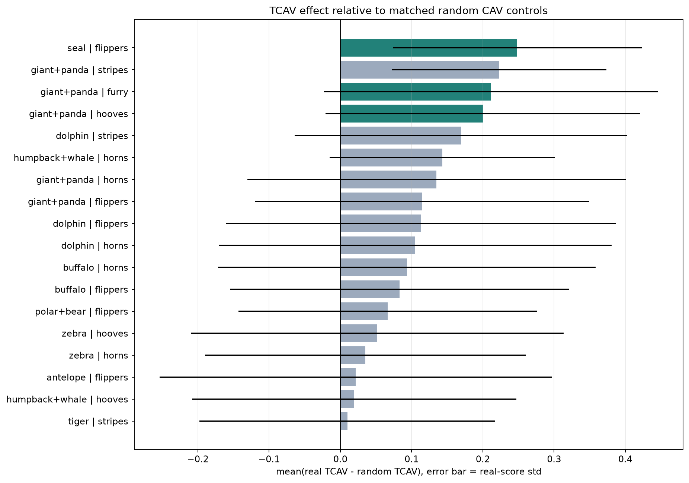
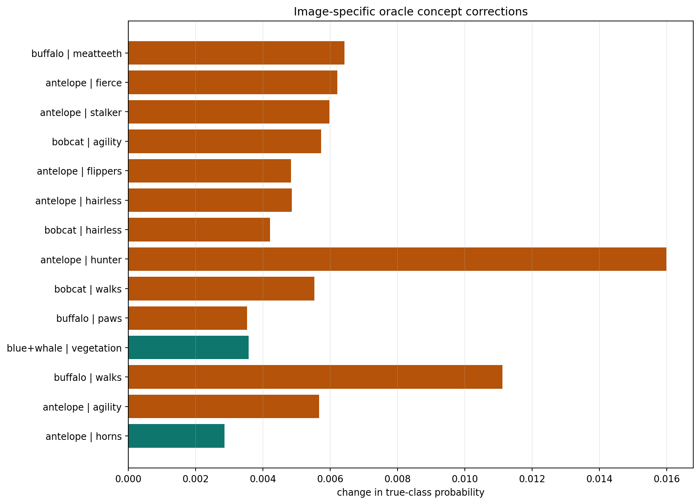
Explanations are most useful as an audit trail: several imperfect views of the model that become stronger when they agree.
Grad-CAM and Integrated Gradients provide local hypotheses about image evidence. Background interventions test whether those hypotheses remain stable. Deletion, insertion, occlusion and randomization controls test whether visual plausibility corresponds to model behaviour. TCAV and the Concept Bottleneck Model add a semantic layer, but the current TCAV visualisations remain exploratory until held-out CAV validation and random-control outputs are generated.
The strongest defensible conclusion remains conservative: post-hoc saliency maps are useful diagnostic tools, but they should not be presented alone as faithful explanations of a deep visual classifier.
A heatmap is not proof. It becomes more credible only when visual inspection, perturbation stability, faithfulness, class specificity and concept evidence tell a consistent story.